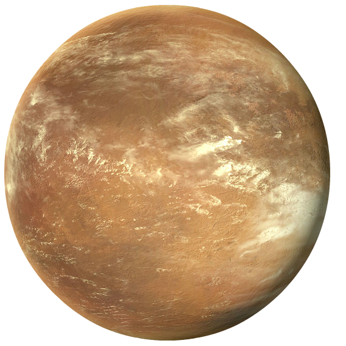
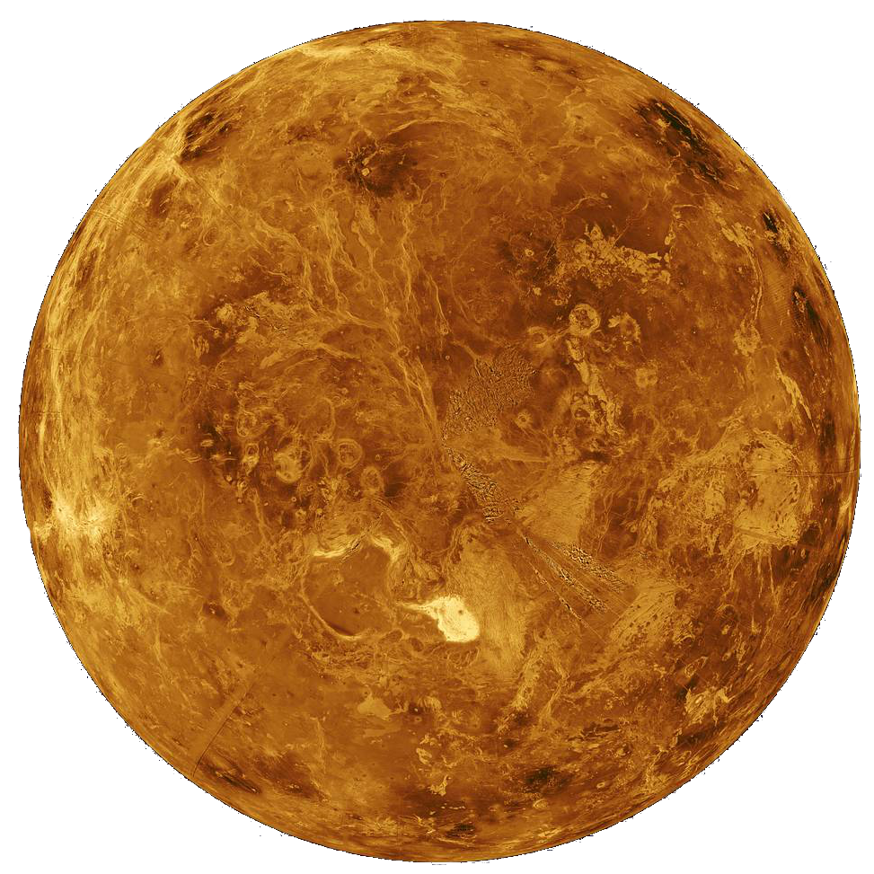
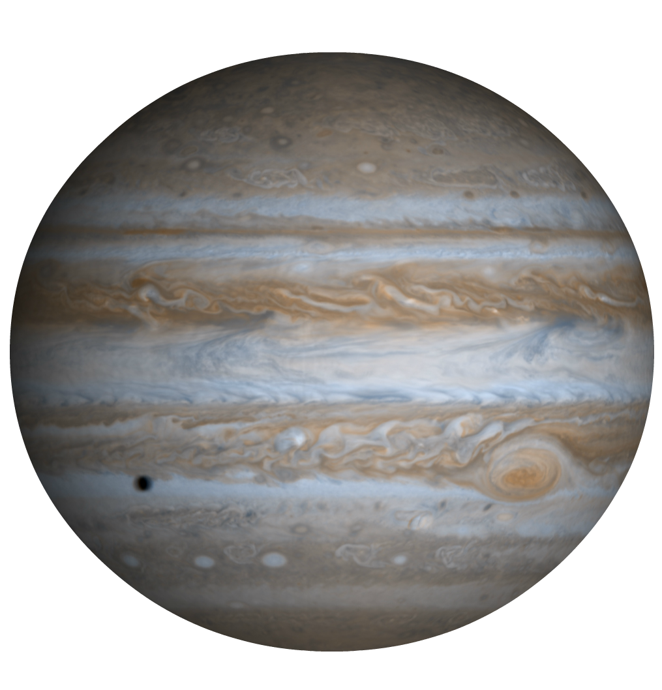
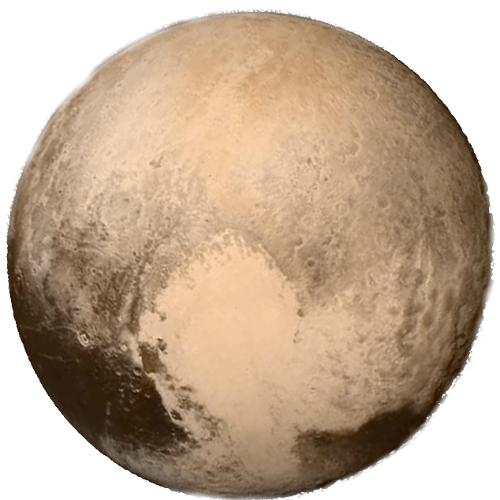

Текст
Солнце (астр. ☉) — одна из звёзд нашей Галактики «Млечный Путь» и единственная звезда Солнечной системы. Вокруг Солнца обращаются другие объекты этой системы: планеты и их спутники, карликовые планеты и их спутники, астероиды, метеороиды, кометы и космическая пыль.
По спектральной классификации Солнце относится к типу G2V (жёлтый карлик). Средняя плотность Солнца составляет 1,4 г/см³. Эффективная температура поверхности Солнца — 5507 градусов по цельсию. Поэтому Солнце светит почти белым светом, но прямой свет Солнца у поверхности нашей планеты приобретает некоторый жёлтыйоттенок из-за более сильного рассеяния и поглощения коротковолновой части спектра атмосферой Земли.

Меркурий (астр. ☿) — ближайшая к Солнцу планета Солнечной системы , наименьшая из планет земной группы. Меркурий относится к планетам земной группы. По своим физическим характеристикам Меркурий напоминает Луну. У него нет естественных спутников, но есть очень разреженная атмосфера. Планета обладает крупным железным ядром. В 1631 году астроном Пьер Гассенди впервые наблюдал транзит Меркурия через солнце, и буквально спустя пару лет другой астроном Джованни Зупи открыл фазы, указывающие на то, что планета вращается вокруг Солнца.

Венера (астр. ♀) — вторая по удалённости от Солнца планета Солнечной системы, принадлежит к семейству планет земной группы. Венерианский год составляет 224,7 земных суток. Она имеет самый длинный период вращения вокруг своей оси (243 земных суток) среди всех планет Солнечной системы и вращается в направлении, противоположном направлению вращения большинства планет. Венера не имеет естественных спутников. Это третий по яркости объект на небе Земли, после Солнца и Луны.
Венера имеет плотную атмосферу, состоящую из более чем 96 % углекислого газа. Атмосферное давление на поверхности планеты в 92 раза больше, чем на поверхности Земли. Открыта в 1610 году Галилео Галилеем.
Земля (астр. ⊕) — третья по удалённости от Солнца планета Солнечной системы. Приблизительно 70,8% поверхности планеты занимает Мировой океан, остальную часть поверхности занимают континенты и острова. На материках расположены реки, озёра, подземные воды и льды, вместе с Мировым океаном они составляют гидросферу. Планета является домом для около 8,7 млн видов живых существ, включая человека.
Луна (астр. ☽)— естественный спутник Земли. Самый близкий к Солнцу спутник планеты, так как у ближайших к Солнцу планет, Меркурия и Венеры, спутников нет. Луна является единственным астрономическим объектом, на котором побывал человек. Гравитационное влияние Луны вызывает на Земле некоторые интересные эффекты. Наиболее известный из них — морские приливы и отливы.
Марс (астр. ♂) — четвёртая по удалённости от Солнца. Температура на планете колеблется от −153 °C на полюсах зимой и до +20 °C на экваторе летом. Атмосфера Марса, состоящая в основном из углекислого газа, очень разрежена. Давление у поверхности Марса в 160 раз меньше земного. Климат, как и на Земле, носит сезонный характер.

Юпитер (астр. ♃) — пятая планета от Солнца, крупнейшая в Солнечной системе. Юпитер классифицируется как газовый гигант. Планета была известна людям с глубокой древности, что нашло своё отражение в мифологии и религиозных верованиях различных культур.
Сатурн (астр. ♄) — Вторая по размерам планета и шестая по счёту в Солнечной системе. В сравнении с остальными планетами, наиболее схожа с Солнцем составом химических элементов. Долгое время кольца на Сатурне считались уникальным явлением, присущим только ему. Лишь недавно было установлено, что кольца имеются у всех газовых гигантов, но у остальных они не настолько явно видны. Их происхождение до сих пор не установлено, хотя существует несколько гипотез о том, как они появились.
Уран (астр. ♅) — Седьмая по счету и третья по размеру планета, радиус которой составляет 25267 км. Справедливо считается самой холодной планетой среди остальных, температура достигает -224 градусов по Цельсию. Из-за сильной наклонности оси планеты, иногда создается впечатление, будто она не вращается, как остальные небесные тела нашей системы, а катится, подобно шару.
Нептун (астр. ♆) — В атмосфере зафиксированы самые сильные ветра в нашей системе, скорость которых достигает 260 м/с. Примечательно, что это – единственная из планет, которая была открыта не благодаря наблюдениям, а с помощью математических расчётов. Иногда Уран и Нептун помещают в отдельную категорию «ледяных гигантов».

Плутон (астр. ♇) — крупнейшая известная карликовая планета Солнечной системы, транснептуновый объект и десятое по массе (без учёта спутников) небесное тело, обращающееся вокруг Солнца — после восьми планет и Эриды. Первоначально Плутон причисляли к обычным планетам, но сейчас он считается карликовой планетой и самым крупным объектом в поясе Койпера.